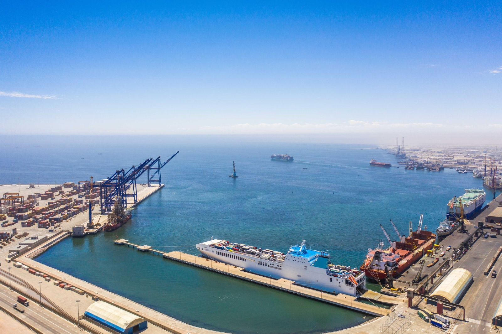
Ship Supply Services in Namibia
Click any category below to explore the complete range of marine supply services available at all Namibian ports.
01. Ship Provisions Supply
Ship Chandler Namibia Port supplies fresh, chilled, frozen, and dry provisions to support vessel crews and galley requirements across Walvis Bay and Namibian ports. Provision orders can be prepared according to crew nationality, vessel requirements, requested brands, and pack sizes. High-quality food provision supply ensures the crew remains well-fed and operational throughout the voyage. Sourcing reliable ship provisions in Namibia requires careful attention to cold-chain logistics and shelf-life management. The procurement process guarantees that all food stores, including fresh produce, meats, and dry goods, meet stringent hygiene standards before delivery to the vessel. Fast coordination of food supply directly to the berth or anchorage minimizes disruption to the vessel's schedule.
Order ProvisionsAvailable Items
- Fresh fruits and vegetables
- Meat and poultry
- Fresh and frozen seafood
- Dairy products
- Eggs
- Bakery products
- Rice, pasta, flour and cereals
- Canned products
- Frozen food
- Dry provisions
- Beverages and drinking water
- Juices and soft drinks
- Coffee and tea
- Condiments, spices and sauces
- International and local food
- Special dietary products
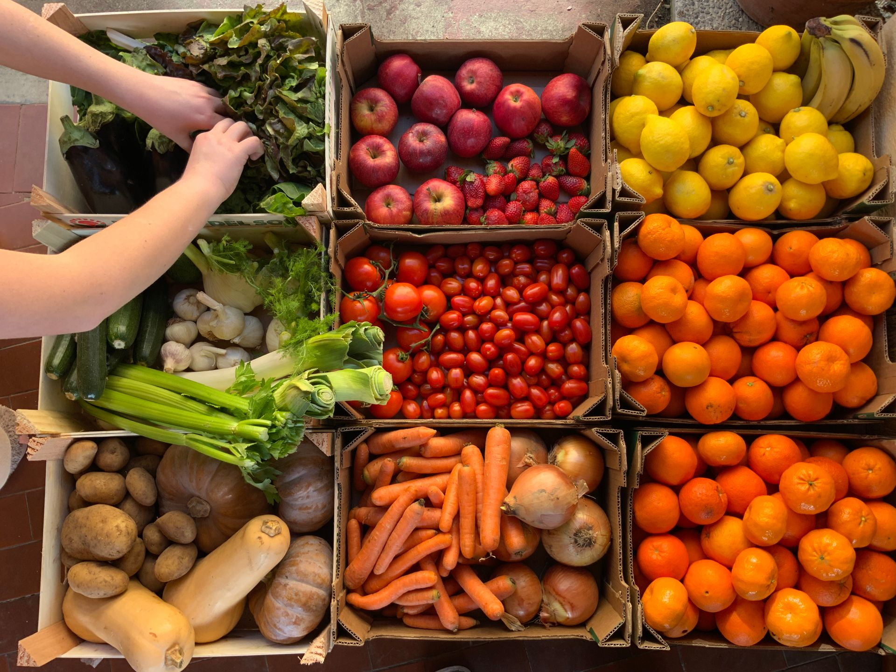
02. Bonded Stores Supply
Ship Chandler Namibiya Port bonded and duty-free provisions can be supplied subject to applicable customs and Namibian port regulations. Ship Chandler Namibia Port coordinates necessary customs clearances and delivery permits directly to the vessel. A reliable bond store supply chain ensures crew welfare items and duty-free goods are delivered efficiently and compliantly. Navigating local customs procedures for bonded stores requires experienced coordination. The vessel supply service manages all necessary documentation to guarantee a smooth transfer of tobacco, confectionery, and personal care items. Strict adherence to port authority guidelines ensures that the bond store supply process is seamless, allowing the crew to receive essential welfare products without delays during the port call.
Order Bonded StoresAvailable Items
- Tobacco products
- Confectionery
- Soft drinks
- Personal care products
- Crew welfare items
- Other bonded products
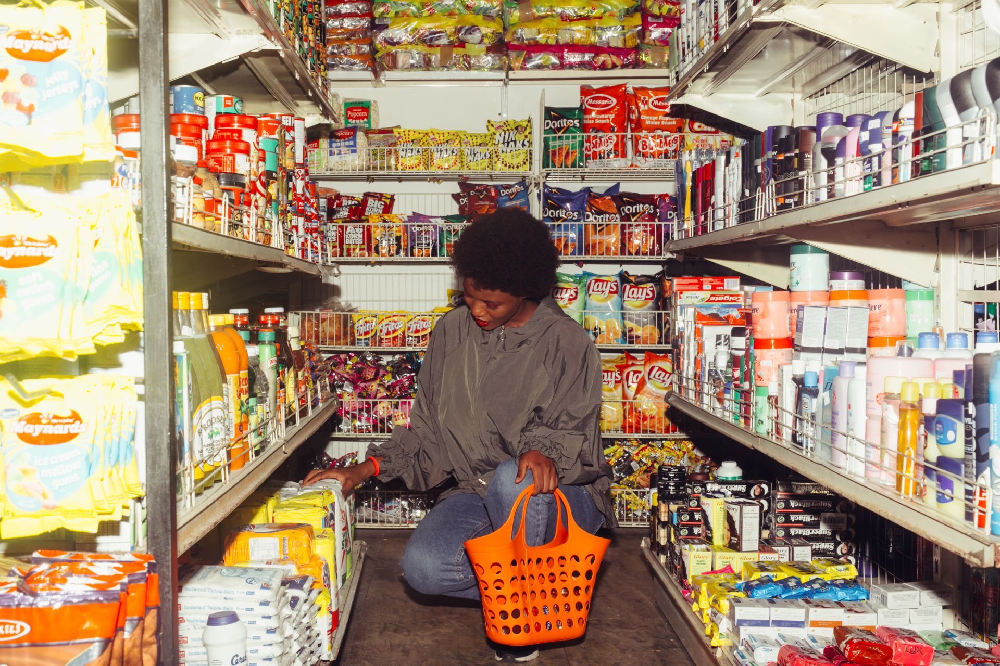
03. Deck Stores Supply
Ship Chandler Namibiya Port deck department can source and supply a wide range of deck consumables and equipment for vessels in Namibia. Deck store products can be quoted according to IMPA references, dimensions, SWL, material specifications, required certificates, or preferred manufacturers. High-quality deck supplies are essential for safe mooring, cargo handling, and routine vessel maintenance. Ensuring the availability of heavy-duty mooring ropes, wire ropes, and lifting accessories is critical for maritime safety. The ship chandler service verifies that all deck equipment meets required load capacities and safety certifications. From marine paints and coatings to cargo securing materials, the comprehensive deck supply ensures the vessel is fully equipped for challenging operational environments.
Order Deck StoresAvailable Items
- Mooring ropes and hawsers
- Wire ropes
- Shackles
- Turnbuckles
- Chains
- Lifting accessories
- Cargo securing materials
- Hoses and couplings
- Marine paints and coatings
- Brushes and rollers
- Tarpaulins
- Cleaning equipment
- Deck maintenance tools
- Safety signs
- Marine hardware
- Hand tools
- PPE and working equipment

04. Engine Stores Supply
Ship Chandler Namibia Port supports engine departments with routine consumables, tools, and technical materials for main engines, generators, and auxiliary machinery. For technical requirements, customers are encouraged to provide maker, model, serial number, part number, drawings, or photographs to ensure accurate sourcing. Quality engine stores and spare parts minimize downtime and maintain vessel operational efficiency. Sourcing reliable engine room consumables, such as filters, gaskets, and mechanical seals, is vital for continuous vessel performance. The technical procurement team assists in identifying exact machinery components, ensuring compatibility with onboard systems. Access to premium lubricants, hydraulic fittings, and workshop consumables keeps the engine department fully operational during transit and port stays.
Order Engine StoresAvailable Items
- Filters
- Gaskets
- Bearings
- Valves
- Pumps
- Mechanical seals
- Lubricants and greases
- Hydraulic hoses and fittings
- Hydraulic products
- Measuring instruments
- Hand and power tools
- Workshop consumables
- Fasteners
- Electrical materials
- Welding consumables
- Engine-room cleaning chemicals
- Pipes, fittings and flanges
- Selected machinery spare parts
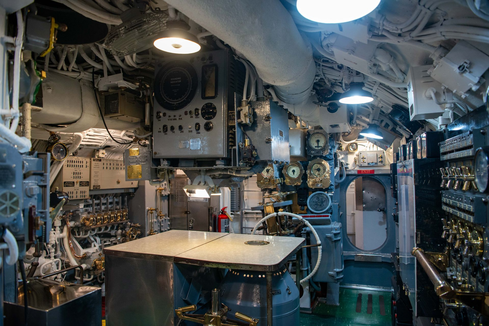
05. Cabin & Galley Stores
Namibia Ship Port provides everyday consumables and equipment required by the accommodation and catering departments on merchant vessels calling at Namibian ports. Cabin and galley stores are sourced to ensure crew comfort and hygiene standards are maintained throughout the vessel's voyage. High-quality accommodation supplies, including bed linen, towels, and mattresses, contribute significantly to crew morale. The vessel supply service also ensures the galley is well-equipped with commercial-grade cookware, utensils, and tableware. Providing essential cleaning products, laundry detergents, and toiletries supports a sanitary living environment, allowing the crew to rest and recover effectively between shifts.
Order Cabin & GalleyAvailable Items
- Bed linen
- Towels
- Blankets
- Mattresses and pillows
- Tableware
- Cookware
- Kitchen utensils
- Galley equipment
- Cleaning products
- Laundry products
- Toiletries
- Garbage bags
- Cabin consumables
- Crew welfare products
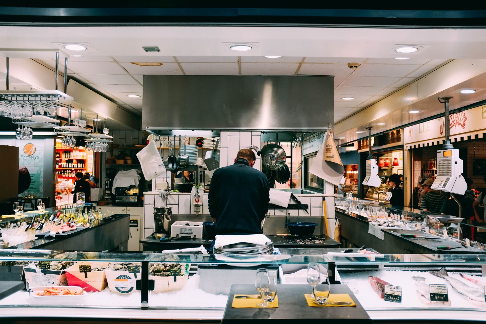
06. Safety & PPE Supply
Ship Chandler Namibia Port can supply Safety and Personal Protective Equipment according to vessel requirements and international standards. Where certification is required, the applicable standard or certificate requirement should be specified in the RFQ. A comprehensive range of safety equipment and PPE ensures the well-being of the crew and compliance with maritime safety regulations. The ship supply service prioritizes the availability of certified safety gear, including hard hats, safety harnesses, and fire-fighting related products. Sourcing durable coveralls, protective gloves, and respiratory protection is essential for hazardous onboard tasks. Ensuring strict adherence to SOLAS and international safety standards protects the crew and mitigates operational risks at sea.
Order Safety & PPEAvailable Items
- Safety helmets
- Safety shoes
- Coveralls
- Protective gloves
- Safety goggles
- Face shields
- Respiratory protection
- Safety harnesses
- Life-saving equipment
- Fire-fighting products
- Safety signs and tapes
- First-aid products
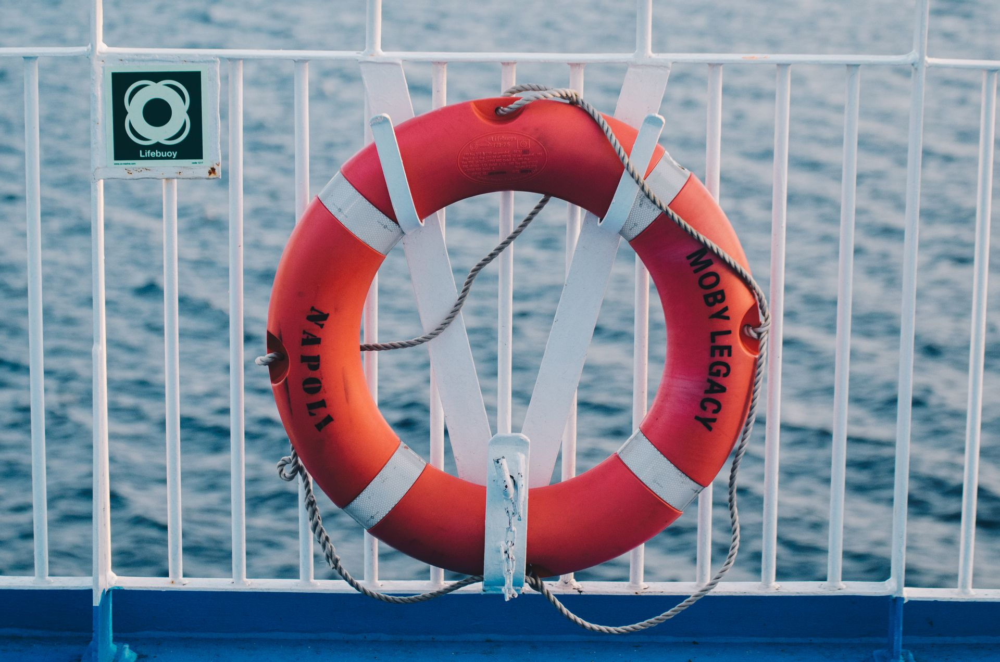
07. Electrical Stores Supply
Ship Chandler Namibia Port sources electrical products and consumables for deck, engine-room, and accommodation requirements for commercial vessels across Namibia. High-quality electrical stores, including marine lamps, cables, and circuit breakers, ensure the vessel's electrical systems remain operational and safe. The ship supply service provides essential electrical consumables, such as fuses, relays, and contactors, to support routine maintenance and emergency repairs. Sourcing specialized marine electronics and robust electrical tools allows the engineering team to troubleshoot and resolve technical issues efficiently. Reliable electrical supply ensures uninterrupted power and navigation capabilities throughout the voyage.
Order Electrical StoresAvailable Items
- Marine lamps
- LED lighting
- Cables and wires
- Plugs and sockets
- Circuit breakers
- Fuses
- Contactors
- Relays
- Switches
- Batteries
- Electrical tools
- Cable accessories
- Electrical consumables
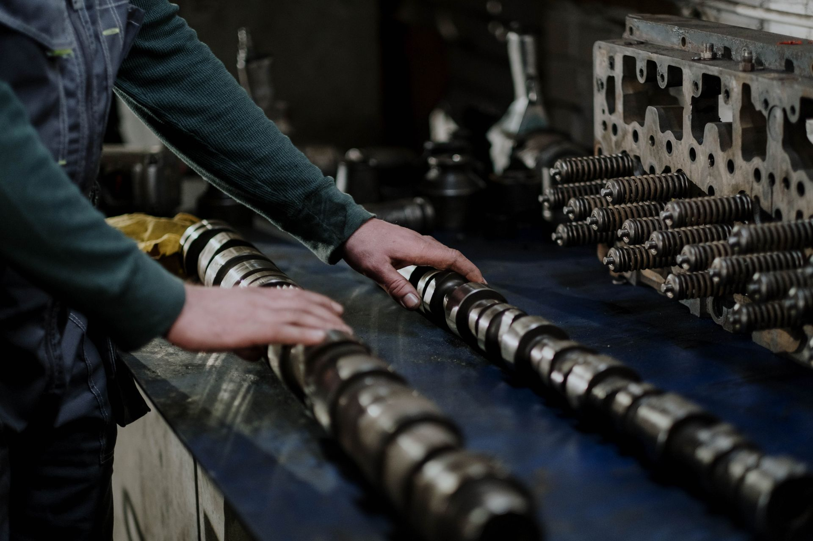
08. Marine Chemicals Supply
At Ship Chandler Namibia Port, Marine and industrial chemicals can be supplied for vessel maintenance, water treatment, and operational requirements. Product specifications and Safety Data Sheets (SDS) can be provided where applicable. Ship Chandler Namibia Port sources quality marine chemicals, including degreasers and tank cleaning products, to maintain vessel hygiene and operational readiness. The vessel supply service ensures the availability of specialized descaling chemicals and water-treatment solutions essential for engine room efficiency. Providing safe and effective maintenance chemicals, along with necessary documentation, supports the crew in performing critical cleaning and preservation tasks. Reliable access to marine chemicals maintains a safe and compliant working environment onboard.
Order Marine ChemicalsAvailable Items
- Cleaning chemicals
- Degreasers
- Rust removers
- Descaling chemicals
- Tank cleaning products
- Water-treatment chemicals
- Maintenance chemicals
- Engine-room cleaning products
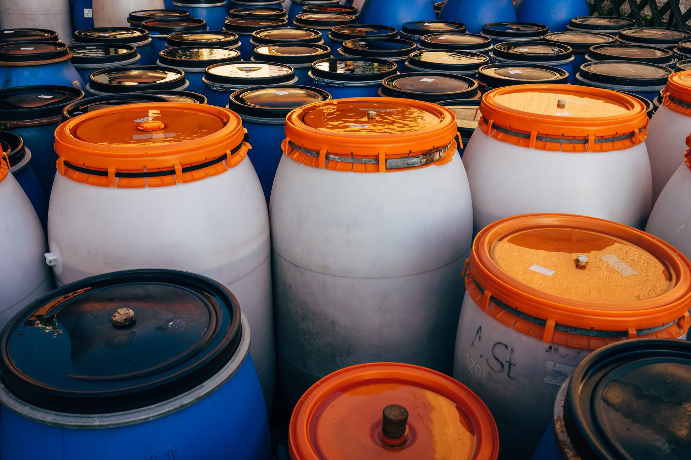
09. Welding Equipment
Ship Chandler Namibia Port can source a comprehensive range of welding and cutting materials for onboard maintenance and repair operations in Namibian ports. Quality welding equipment, including electrodes, wires, and cutting discs, supports the vessel's crew in performing essential repairs and fabrication tasks safely and effectively. The ship supply service ensures the availability of robust welding accessories, regulators, and personal protective equipment. Sourcing reliable cutting and welding equipment is critical for structural maintenance and emergency repairs at sea. Access to industrial and marine gases, subject to local regulations, ensures the vessel's workshop remains fully operational for critical fabrication work.
Order Welding EquipmentAvailable Items
- Welding electrodes
- Welding wire
- Cutting discs
- Grinding discs
- Welding accessories
- Welding PPE
- Regulators
- Hoses
- Cutting and welding equipment
- Industrial and marine gases
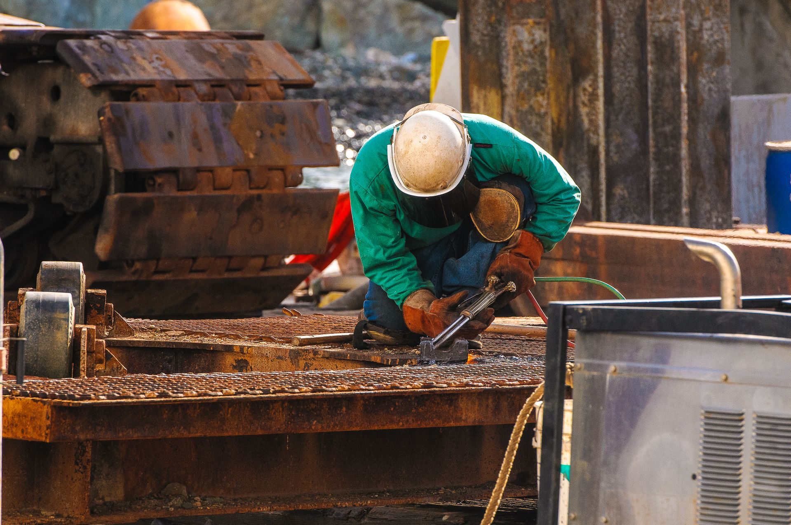
10. Spare Parts & Procurement
Procurement team at Ship Chandler Namibia Port can assist with standard and non-standard marine spare parts and technical equipment. For faster identification, please provide maker, equipment model, serial number, OEM part number, IMPA reference, dimensions, drawings, or clear photographs. Sourcing quality marine spare parts for main engines, pumps, and compressors is critical to minimizing vessel downtime and ensuring operational reliability. The technical procurement service specializes in identifying exact replacement components, including electric motors, refrigeration parts, and hydraulic equipment. Reliable access to OEM and alternative spare parts supports the engineering department in executing timely overhauls and repairs, keeping the vessel compliant and operational.
Order Spare PartsAvailable Items
- Main and auxiliary engine parts
- Pump components
- Compressor parts
- Electric motors
- Refrigeration components
- Navigation equipment
- Communication equipment
- Marine electronics
- Electrical components
- Hydraulic components
- Industrial equipment
- OEM and alternative spare parts
11. Nautical Charts
Ship Chandler Namibia Port can assist vessels with nautical charts, marine publications, and operational reference materials required for their voyage. Access to up-to-date nautical charts and publications is essential for safe navigation and compliance with international maritime regulations. The ship supply service provides official vessel logbooks and record books to ensure mandatory documentation is accurately maintained. Sourcing the latest IMO, SOLAS, MARPOL, and STCW publications guarantees the vessel operates within current legal frameworks. Reliable supply of navigational notices and flag sets supports safe and efficient global transit.
Order PublicationsAvailable Items
- Admiralty nautical charts
- IMO, SOLAS, MARPOL & STCW publications
- Official vessel logbooks and record books
- Marine navigational notices and flag sets
12. Tools & Hardware
Ship Chandler Namibia Port's supply range includes hand tools, power tools, cutting tools, measuring equipment, fasteners, and general marine hardware for routine maintenance and emergency repairs. Ship Chandler Namibia Port ensures that quality tools and marine hardware are readily available to support the vessel's crew in maintaining operational efficiency and safety. The vessel supply service provides durable hand tools and precision measuring equipment essential for engine room and deck tasks. Sourcing high-grade fasteners, drill bits, and abrasives ensures the workshop is prepared for challenging repair jobs. Access to professional-grade hardware and power tools enhances the crew's ability to perform complex maintenance tasks efficiently.
Order Tools & HardwareAvailable Items
- Hand tools
- Power tools
- Cutting tools
- Measuring equipment
- Fasteners
- General marine hardware
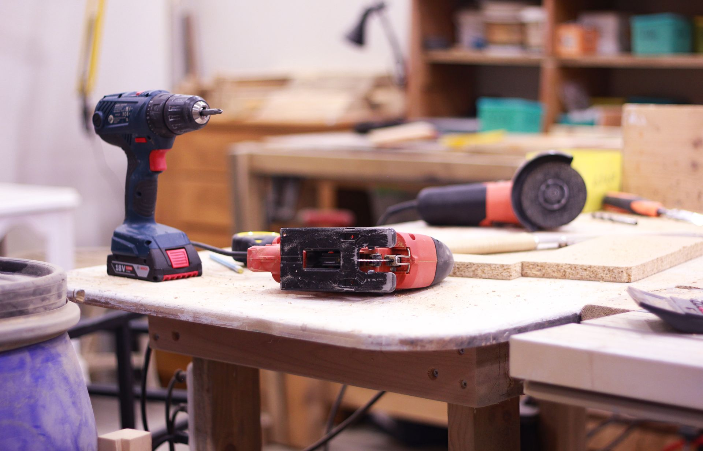
13. Urgent Ship Supply
At Ship Chandler Namibia Port, Vessel schedules can change quickly. For urgent requirements, Ship Chandler Namibia Port can coordinate procurement and delivery according to the vessel ETA, berth availability, port access, and local operating conditions. Urgent enquiries should clearly indicate the required delivery deadline so that availability and logistics can be assessed immediately to prevent vessel delays. The ship chandler service prioritizes rapid response and efficient sourcing of critical items, including emergency provisions and technical spares. Coordination with port agents and launch boats ensures rapid dispatch to the vessel's berth or outer anchorage, resolving last-minute shortages quickly.
Order Urgent SupplyService Highlights
- Emergency ETA and short-call coordination
- Rapid sourcing within vessel port stay
- Berth and outer anchorage launch dispatch
- Direct boarding agent synchronization
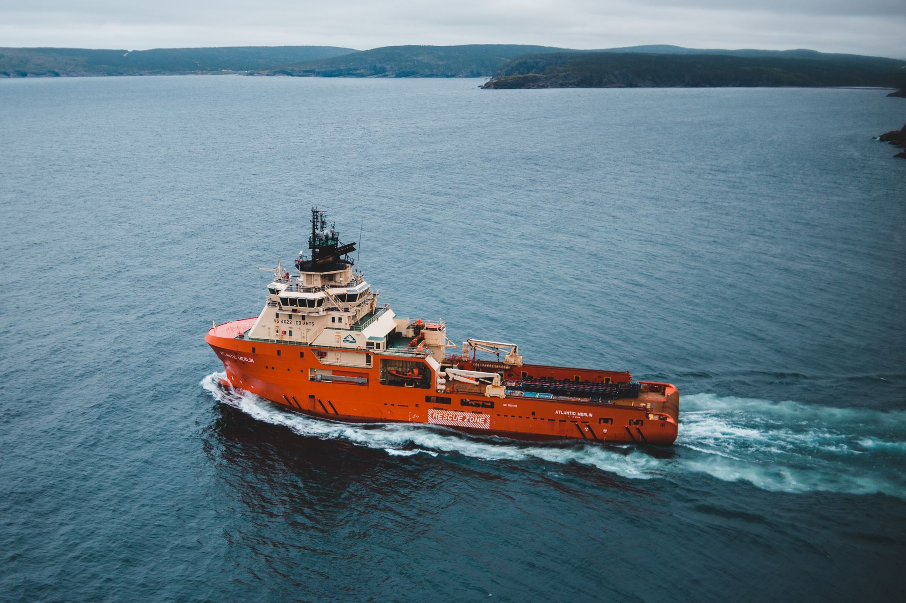